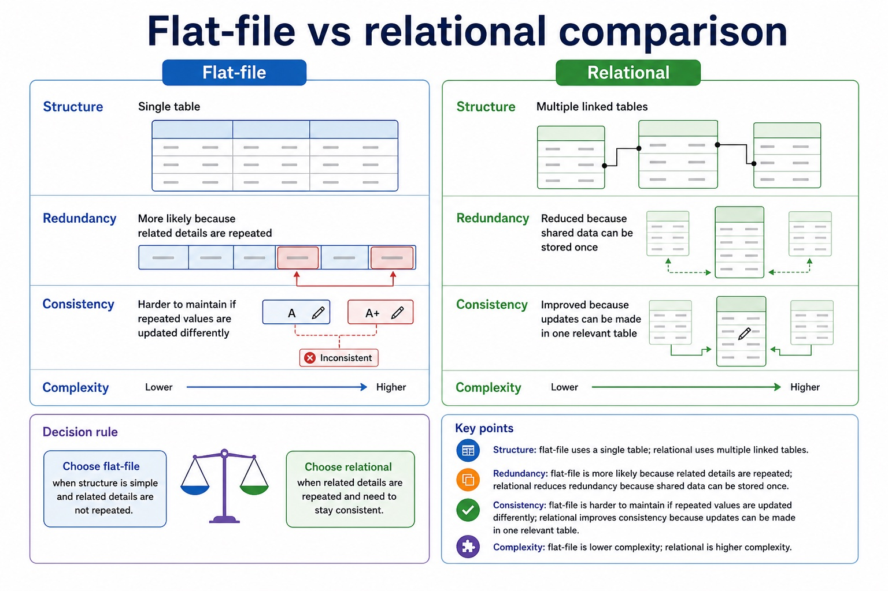

Limitations of file-based systems and how relational databases address them
Visual overview
Flat-file vs relational comparison

Visual transcript
- Flat-file
- Relational
- Structure
- Single table
- Multiple linked tables
- Redundancy
- More likely because related details are repeated
- Reduced because shared data can be stored once
- Consistency
- Harder to maintain if repeated values are updated differently
- Improved because updates can be made in one relevant table
- Complexity
Core explanation
Limitations of file-based storage/retrieval and relational-database features that address those limitations.
Relational databases reduce selected file-based limitations by storing shared facts once in linked tables with centrally enforced rules.
A relational database addresses these limitations by separating entities into linked tables, storing shared facts once, identifying records with keys and enforcing relationships and constraints centrally. A DBMS supplies shared query processing, integrity, security, access rights and backup. These mechanisms reduce particular file-based risks; a relational design is not automatically smaller, simpler or error-free.
A file-based approach stores data in separate application files. The same fact may be repeated in several files or records, causing redundancy and wasted storage. Updating only some copies creates inconsistency; insertion and deletion can also lose or require unrelated facts. Separate files may use incompatible formats, isolate data, duplicate validation/security code and make shared querying, concurrent access, backup and recovery harder to manage.